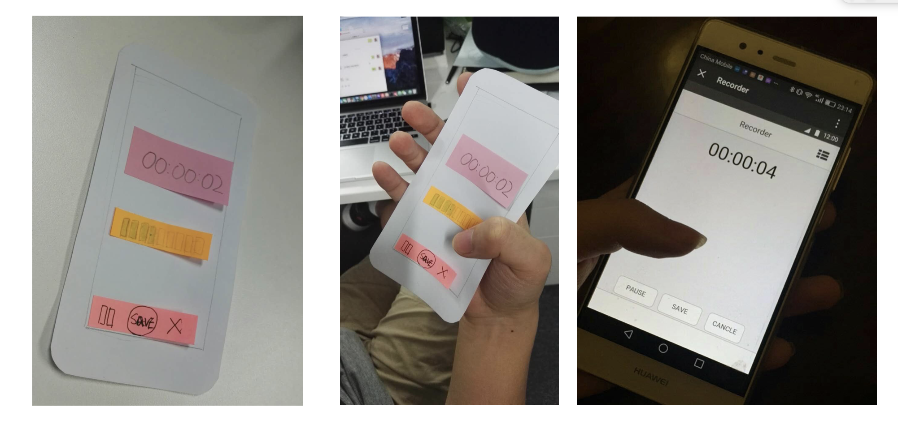
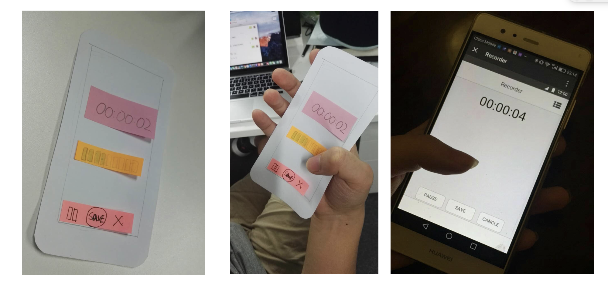
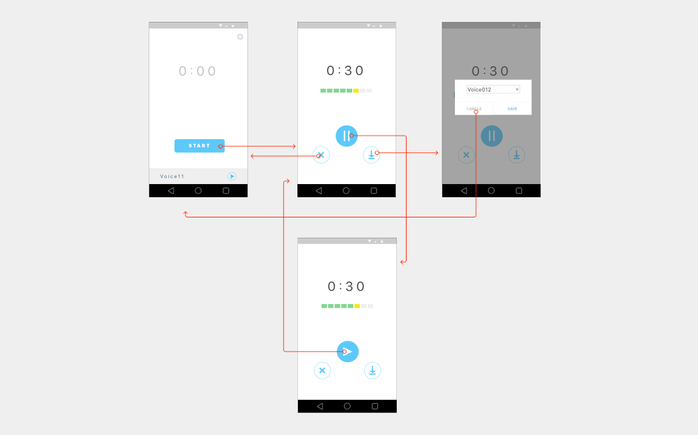
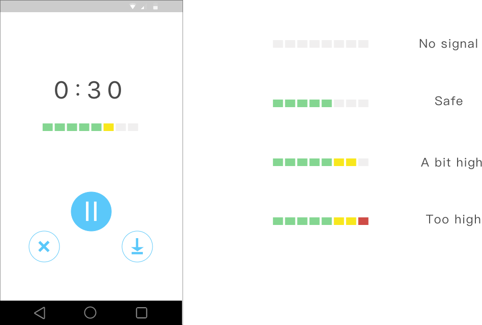
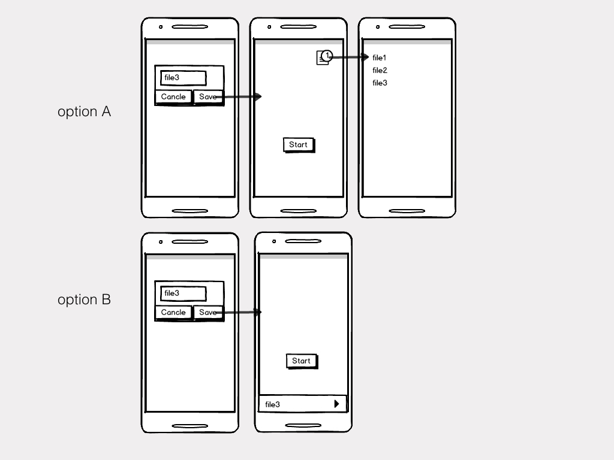
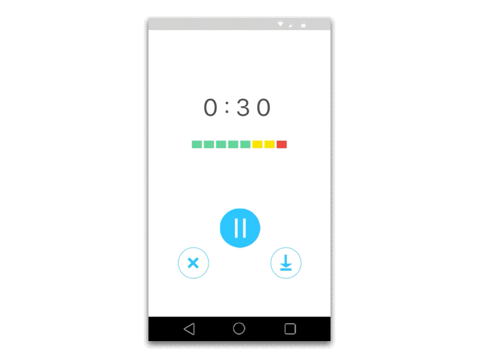

States and controls
A recorder is a system which can transfer between different states. One challenge of designing a recording app is to create natural mapping between control buttons and system states.

Rapid prototype
I sketched a simple system prototype and i created paper prototype and a simple interactive prototype with Mockingbot to validate the design with user.
 

Redesign the control panel
I explored different sets of control buttons with following design principles in mind:
- Simplicity
- Natural mapping
- Intuitive
Following is the final design of the control panel
Information design
Different colors represent different levels of volume
Making user flow more efficient
In most of the recording apps, users need to go to file list to listen to the audio clip after saving the file. I try to create a faster user flow.
You can save and listen to the file without swift between screens
